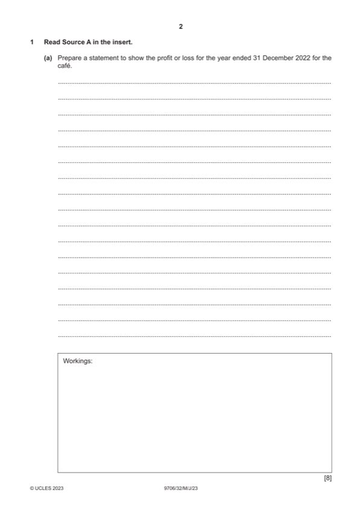

Question 1

Original paper page 2
Part 1(a) — solution
Prepare a statement to show the profit or loss for the year ended 31 December 2022 for the café. 8
Statement of profit or loss for the café for year ended 31 December 2022
$ $
Revenue W1 69 400 (1)
Opening inventory 5 900
Purchases W2 29 800 (1)
Closing inventory W3 (4 500) (1)
Cost of sales 31 200
Gross profit 38 200
Wages W4 14 920 (1)
Rent W5 7 200 (1)
Heating and lighting W6 3 400 (1)
Depreciation of café equipment W7 6 160 (1)
Mark points
- Include the ideas shown in the solution above.
Part 1(b) — solution
Prepare the club’s income and expenditure account for the year ended 31 December 2022. 9
Income and expenditure account for year ended 31 December 2022
$ $
Subscriptions W1 69 200 (3) OF
Life membership W2 5 600 (1)
Profit from café 6 520
Mark points
- Include the ideas shown in the solution above.
Part 1(c) — solution
Prepare a statement showing the movement in the accumulated fund for the year 2022. 3
$
Accumulated fund at 1 January 2022 W1 136 470 (2)
Surplus for the year 5 630
Accumulated fund at 31 December 2022 142 100 (1)OF
W1:
$
Book value of given balances 87 270
Life member (6 $2 000 8/10) + (10 $2 000 9/10) (27 600) (1)
Bank 76 800
Accumulated fund at 1 January 2022 136 470 (1)OF
Mark points
- Include the ideas shown in the solution above.
Part 1(d) — solution
Advise the management committee which option they should choose. Justify your answer. 5
Max 4 marks for comments
Mark points
- Include the ideas shown in the solution above.
Part 1 — solution
mark for decision supported with a comment
Security is required for the long-term loan / not for the personal loan (1)
Lower interest rate because of the security in case of long-term loan/ higher interest rate for personal loan (1)
Long-term loan takes longer time because of the paper work/ personal loan is quicker to get because of little formalities
involved (1)
Long-term loan has a fixed term/ Personal loan can be recalled anytime (1)
Accept other valid responses.
Mark points
- Include the ideas shown in the solution above.
Part 1 — solution
mark for decision supported with a comment
For (max 2)
She has experience and knowledge in the trade. (1)
She now has time to run her own business (1)
She can supplement her income from X Limited. (1)
She takes all the profit from her own business. (1)
Against (max 2)
She will be in competition with X Limited. (1)
She will have start up costs (1)
She must consider whether the cash received is sufficient. (1)
She has unlimited liability. (1)
2023 Page 17 of 17
Mark points
- Include the ideas shown in the solution above.